Planilha Financeira, Indicadores e Relatório Técnico: como preencher e como uma alimenta a outra
Guia operacional das três ferramentas que o Analista de P&D da executora usa para a prestação de contas mensal. O conteúdo foi levantado aba por aba, coluna por coluna e seção por seção nos modelos anexados, incluindo as fórmulas que ligam os números.
Planilha Financeira
Modelo_PPI4.0_Planilha_Financeira_Mensal.xlsm · 22 abas
Indicadores
Modelo_Indicadores_Gerenciais_do_Projeto_v2.xlsx · 8 abas
Relatório Técnico
Modelo_PPI4.0_Relatorio_Demonstrativo_v2.docx · seções I a XXI
Versão
04/11/2026
00 · Resumo
Três ferramentas, uma cadeia de números
22abas na Planilha Financeira, das quais 10 recebem lançamentos de despesa
7rubricas com indicadores mensais (IG e tópico XVI do RD)
21seções no Relatório Técnico, de Dados Gerais à Conclusão da Coordenadora
15 × 12meses na Posição Financeira contra 12 nos Valores previstos e no IG
297fórmulas com erro #REF! encontradas no modelo da planilha
PF
Planilha Financeira Mensal
Registra cada despesa por rubrica, compara PUR × tendência × realizado mês a mês e concilia com o extrato bancário. É a fonte de todos os valores em R$.
.xlsm · Banco do Brasil · 15 meses
IG
Indicadores Gerenciais
Mostra, para 7 rubricas, valor, profissionais e horas planejados e realizados, mensais e acumulados, com o percentual de execução. Os mesmos quadros entram no tópico XVI do RD.
.xlsx · digitação mensal · 12 meses
RD
Relatório Técnico (Demonstrativo)
Narra o projeto e as atividades do período, de forma cumulativa, e fecha com quadros de dispêndios, RH e indicadores que precisam bater com a planilha.
.docx · cumulativo · Rev-xx
A ordem importa. A Planilha Financeira é fechada primeiro, porque ela gera os valores que o Indicadores e o Relatório Técnico repetem. O Relatório Técnico depende também do Coordenador do Projeto para o conteúdo das atividades. Se um valor muda na planilha depois que o relatório foi montado, os quadros XIII a XVI ficam desatualizados.
Cada explicação das seções 04 a 06 vem acompanhada do print do modelo original, com as áreas marcadas e numeradas. A legenda ao lado de cada print usa os mesmos números. Use o botão Ampliar para ver o print em tamanho real.
1área explicada2resultado ou campo calculado3ponto de atenção4no relatório técnico: preenchido pelo time técnico
O levantamento das fórmulas mostrou pontos do modelo que podem gerar erro silencioso: rótulos de mês que zeram o total previsto, orientações que citam células erradas, abas cujos valores não chegam aos totais e fórmulas quebradas. Eles estão na seção 08, com a correção sugerida.
01 · Mapa de integração
De onde vem cada número
Fonte externaPlanilha Financeira (PF)Indicadores (IG)Relatório Técnico (RD)Ponto de conferência
Linhas cheias são ligações por fórmula ou cópia direta. Linhas tracejadas são dados que o analista transcreve manualmente, pois o IG não tem vínculo com a PF.
Ligação
Como acontece no modelo
Tipo
Abas de rubrica → Posição Financeira
Linha "Real." de cada rubrica usa SUMIF pela chave mês-ano da coluna A da aba (gerada a partir da data na coluna B).
Fórmula
Abertura de Pagamentos → Posição Financeira
RH Direto e Indireto somam a coluna AZ (Valor Total Folha) das abas III.I e IV.I. As abas III e IV (RH_Custo) não entram na soma.
Fórmula
Valores previstos Iniciais → Posição Financeira
Linha "PUR" de cada rubrica puxa M1 a M12 (colunas G a R).
Fórmula
Posição + Conc. Bancária → Consolidado
Coluna G (realizado) vem da Posição; coluna I soma o extrato por rubrica; K = G − I.
Fórmula
PF → Indicadores
Sem vínculo. Os valores mensais são digitados nas células amarelas do IG.
Manual
PF e IG → RD
Sem vínculo. Os quadros XIII a XVI do Word são preenchidos com os totais da PF e os quadros do IG.
Manual
02 · Ordem de preenchimento
Configuração inicial e fechamento de cada mês
Uma vez, no início do projeto (e a cada adendo)
PF Posição Financeira: cabeçalho
C1 unidade, C2 parceiro, C3 credenciado no CATI (SIM liga os custos incorridos), C6 nome do projeto, L1 início, L2 fim, L3 valor total conforme termo aditivo, M7 data do mês 1, C76 saldo de convênio anterior, C77 % de custos incorridos, C79 % de imposto.
PF Valores previstos Iniciais
Cronograma de desembolso do PUR: valor de cada rubrica em M1 a M12 (G9:R18). Custos incorridos e ISS são calculados. Percentuais em E34 (executora) e E35 (coordenadora).
PF Profissionais Previstos
Uma linha por função prevista: mês inicial, mês final, horas totais, salário e custo total.
PF Conc. Bancária: dados da conta
Banco, agência e conta corrente na linha 1.
IG Linhas planejadas
Em cada uma das 7 abas: R$ PUR (linha 2) e, em RHD e RHI, Profissionais PUR (linha 10) e Horas PUR (linha 15), para os 12 meses, conforme PUR ou último adendo.
RD Partes fixas
I Dados Gerais (projeto, PUR, adendo, períodos, valores, executora, CAPDA, beneficiária, classificações), II Descrição, III e IV Objetivos, V Desafio, VIII Escopo e tabela de temas do PPI4.0.
Todo mês, na ordem
PF Lançar despesas nas abas de rubrica
Uma linha por documento fiscal: data (gera o mês), fornecedor, NF, valores, datas, rateio e justificativa.
PF Lançar a folha nas Aberturas de Pagamento
Uma linha por profissional por mês em III.I (RHD) ou IV.I (RHI), com horas no projeto, verbas, encargos, benefícios e provisões.
PF Registrar guias na aba Impostos
Registro de PIS, COFINS, IR, INSS, CSLL e ISS com a NF de origem. A aba não alimenta totais.
PF Conciliar o extrato
Cada débito na Conc. Bancária com competência, favorecido, NF, valor e rubrica escolhida da lista; pendências na área "Valores pendentes".
PF Atualizar a Posição Financeira
Marcar o mês como "Realizado" na linha 6, lançar o % técnico (I4), rendimentos e IRRF (linhas 70–71), aportes materiais (68) e replanejar a Tendência dos meses seguintes.
PF Fechar o Consolidado
Informar saldo em conta e aplicação (D28). Conferir Verificação (K16) = 0 e Diferença entre saldo e extrato (D32) = 0.
IG Digitar o realizado do mês
R$ realizado por rubrica (linha 3), profissionais (11) e horas (16). Os acumulados e percentuais calculam sozinhos.
RD Acrescentar o mês ao tópico XII
Manter os quadros anteriores e somar o mês: período, justificativa, resultados, serviços de terceiros, aplicação dos dispêndios, participantes com horas e dispêndios por rubrica.
RD Atualizar cronograma, metas e quadros
X Gantt e valor agregado, XI entregáveis, XIII resumo, XIV comparativo, XV RH, XVI indicadores com as três respostas de desvio.
RD Riscos, lições, mudanças e revisão
XVII a XIX quando houver; XX nova linha na tabela de revisões; I Dados Gerais com novo período do reporte e valor realizado.
PC Conferir coerência entre as três
Totais do RD XIII = Posição Financeira; IG = Posição; horas do RD XV = Aberturas. Usar o checklist da seção 10.
PC Salvar e enviar
Ano_Mês_PPI4.0_Plan_Financ_PUR-xx-xx_Executora_Rev-xx e Ano_Mês_PPI4.0_Relat_Tec_PUR-xx-xx_Executor_Rev-xx na pasta 15 do drive.cits.
03 · Correspondência de rubricas
A mesma rubrica tem números diferentes em cada ferramenta
Use esta tabela para não lançar um valor na linha errada ao passar da planilha para o relatório.
Rubrica
PF · Posição
PF · aba de lançamento
Rótulo na Conciliação
IG · aba
RD / Termo
Pasta drive.cits
Roteiro R6
Programas, máquinas e equipamentos
I
I - Programa de Computador
Programa de computador
Equipamentos
I
1
Inciso III · item 12
Laboratório de P&D
II
II - Modernização LAB
Implantação, Ampliação ou Modernização de laboratório de P&D
Laboratório
II
2
Inciso IV · item 13
RH Direto
III a
III.I RHD_Abertura_Pgtos
Recursos Humanos Diretos
RHD
III
3
Inciso I · item 10
RH Indireto
III b
IV.I - RHI_Abertura_Pgtos
Recursos Humanos Indiretos
RHI
IV
4
Inciso II · item 11
Livros e periódicos
IV
V - Livros e Periodicos
Livros e Periódicos
—
V
5
Inciso V · item 14
Materiais de consumo
V
VI - Material de Consumo
Material de Consumo
Materiais
VI
6
Inciso VI · item 15
Viagens
VI
VII - Viagens
Viagens
—
VII
7
Inciso VII · item 16
Treinamento
VII
VIII - Treinamentos
Treinamento
—
VIII
8
Inciso VIII · item 17
Serviços técnicos de terceiros
VIII
IX - Serviços Terceiros
Serviço de Terceiro Técnicos
STT
IX
9
Inciso IX · item 18
Outros correlatos
IX
X - Outros Correlatos
Outros Correlatos
Correlatos
X
10
Inciso X · item 19
Custos incorridos · Executora
linha 53
— (calculado)
Custos Incorridos e Constituição de Reserva
—
XI
11
item 20
Custos incorridos · Coordenadora
— (só em Valores previstos)
—
—
—
XII
—
—
ISS / impostos
linha 57
Impostos (registro)
—
—
XIII
13
itens 9.3 · 19.3
04 · Planilha Financeira Mensal
Arquitetura, lançamentos e fechamento
As 22 abas por função
Configuração
Orientações
Profissionais Previstos
Valores previstos Iniciais
Lançamentos
I - Programa de Computador
II - Modernização LAB
III.I RHD_Abertura_Pgtos
IV.I - RHI_Abertura_Pgtos
V - Livros e Periodicos
VI - Material de Consumo
VII - Viagens
VIII - Treinamentos
IX - Serviços Terceiros
X - Outros Correlatos
Consolidação
Posição Financeira
Consolidado
Conc. Bancária
Visões e registro
III - RH Direto_Custo
IV - RH Indireto_Custo
Impostos
Gráficos (11)
Apoio
GASTOS NÃO ELEGÍVEIS
Plan1 (vazia)
Abas de lançamento
Digitar campo de entrada Fórmula calculado pelo modelo
Aba
Campos a preencher
Valor que vai para a Posição
Cálculo do valor
I - Programa de Computador
Data, tipo, descrição, quantidade, fornecedor, NF, valor da nota, datas, rateio, justificativa
L · Valor Aplicado ao Projeto
Digitar (sem fórmula no modelo)
II - Modernização LAB
Data, obra, finalidade, fornecedor, NF, valor da nota, datas, rateio
Data, tipo (PIS, COFINS, IR, INSS, CSLL, ISS), fornecedor, NF, valor, datas, rateio
Não alimenta
K = G × J (só registro)
Chave do mês
Em todas as abas, a coluna A é calculada como MÊS-ANO a partir da data digitada na coluna B (por exemplo, 3-2026). A Posição Financeira busca os valores por essa chave. Uma data errada na coluna B joga o valor para outro mês sem aviso. O campo Rateio vem preenchido com 1 (100%) e precisa ser ajustado quando a despesa é compartilhada.
PFPlanilha Financeira · aba VI - Material de Consumo (modelo das abas de rubrica)
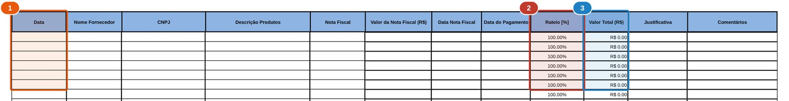
1Data. Gera a chave mês-ano da coluna A, que fica oculta no arquivo.
2Rateio. Vem preenchido com 100%.
3Valor Total = valor da NF × rateio. É este valor que vai para a Posição Financeira.
PFPlanilha Financeira · aba I - Programa de Computador
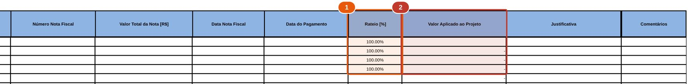
1Rateio.
2Valor Aplicado ao Projeto. Sem fórmula: se ficar vazio, o gasto não aparece na Posição.
Folha de pagamento: como a Abertura chega ao valor do mês
Na linha de exemplo do modelo, cada verba é multiplicada pelas horas no projeto (coluna K) e dividida pela base mensal de 176 horas (célula K6). É assim que a planilha proporcionaliza o custo de quem não atua 100% no projeto.
Percentuais da linha de exemplo: FGTS 8%, PIS 1%, INSS empresa 20%, provisão de férias = salário ÷ 12 × 1,3333, provisão de 13º = salário ÷ 12. As abas III e IV (RH_Custo) espelham a Abertura em formato resumido (salário, FGTS, PIS, INSS, encargos, benefícios, provisões) e têm a coluna "Atividades Realizadas", útil para o tópico XII do RD.
PFPlanilha Financeira · aba III.I RHD_Abertura_Pgtos · colunas A a N
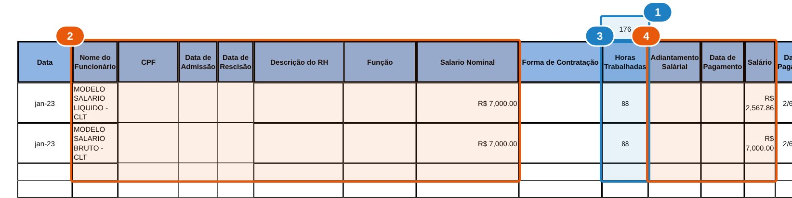
1K6 · Base mensal de 176 horas.
2Dados do profissional. As duas linhas são exemplos do próprio modelo.
3Horas trabalhadas no projeto. Proporcionalizam todas as verbas.
4Adiantamento, salário e datas de pagamento.
PFPlanilha Financeira · aba III.I RHD_Abertura_Pgtos · colunas AD a BB
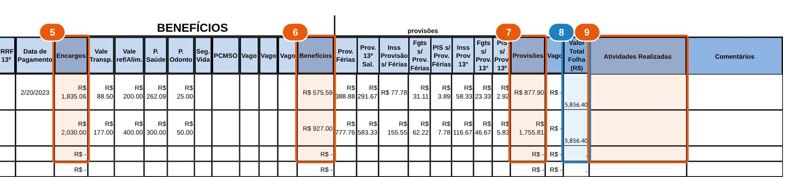
5AE · Encargos (FGTS, PIS, INSS, IRRF).
6AO · Total de benefícios.
7AX · Total de provisões de férias e 13º.
8AZ · Valor Total Folha. É a coluna que a Posição Financeira soma.
9BA · Atividades Realizadas. Base para o tópico XII do relatório.
Posição Financeira: três linhas por rubrica
PUR
Plano de utilização de recursos, mês a mês. Vem automaticamente de Valores previstos Iniciais. Atualize lá quando houver adendo.
Tendência
Replanejamento. No modelo, cada mês repete o realizado. As Orientações pedem que, ao fim de cada mês, os meses seguintes recebam a nova previsão de gasto.
Real.
Soma automática da aba de lançamento para aquele mês.
Linha 6
Situação de cada mês: Realizado (conta em Total Realizado) ou Projetado (conta em Total Previsto, pela linha Tendência).
Coluna
Nome
Fórmula
Leitura
C
Baseline (PUR)
soma PUR M:AA
Orçamento total da rubrica
D
Total Previsto
Tendência dos meses "Projetado"
O que ainda falta gastar, pela previsão atual
E
Total Realizado
Real. dos meses "Realizado"
Gasto acumulado até a competência
F
Realizado + Previsão
D + E
Projeção de fechamento
G
Diferença
C − F
Sobra (positivo) ou estouro (negativo) projetado
J
% Realizado da Rubrica
E ÷ C
Execução financeira da rubrica
K
% Previsto da Rubrica
F ÷ C
Execução projetada ao fim
J4
Status técnico
% técnico ÷ % financeiro − 1 > −25%
"Técnico em dia" ou "Técnico Atrazado" (grafia do modelo)
Abaixo das rubricas: Total das despesas (49), Custos incorridos (53, só se C3 = SIM), Impostos (57), Total (61), Aportes (65–68), Rendimentos líquidos (70–72) e Saldo final (74).
PFPlanilha Financeira · aba Posição Financeira · cabeçalho
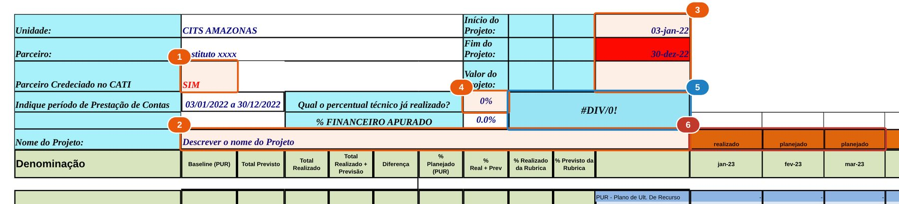
1C3 · Parceiro credenciado no CATI. SIM liga o cálculo de custos incorridos.
2C6 · Nome do projeto. A aba Orientações aponta C5, mas o campo está aqui.
3L1 a L3 · Início, fim e valor total do projeto.
4I4 · Percentual técnico já realizado, digitado pelo analista.
5J4 · Status técnico. Mostra #DIV/0! enquanto o % financeiro for zero.
6Linha 6 · Situação de cada mês. O modelo vem com "realizado" e "planejado"; as fórmulas esperam Realizado e Projetado.
PFPlanilha Financeira · Posição Financeira · bloco de uma rubrica
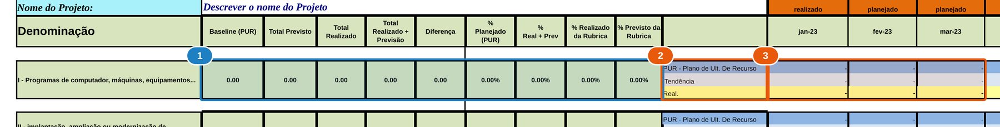
1Colunas C a K · Resumo da rubrica: baseline, previsto, realizado, diferença e percentuais.
2Coluna L · As três linhas: PUR, Tendência e Real.
3Coluna M em diante · Valores mês a mês, um mês por coluna (15 meses).
PFPlanilha Financeira · Posição Financeira · linhas 49 a 79
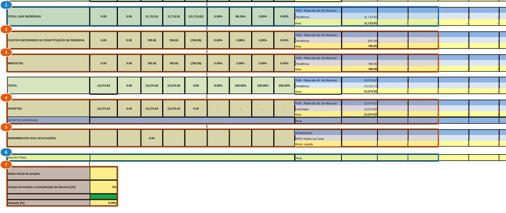
1Total das despesas (soma das rubricas).
2Custos incorridos e constituição de reserva (só com C3 = SIM).
3Impostos, calculados a 5% sobre o total.
4Aportes e aportes materiais.
5Rendimentos das aplicações, IRRF e rendimento líquido.
6Saldo final do mês.
7C76 saldo inicial, C77 % de custos incorridos, C79 % de imposto. A célula verde em C78 não tem uso.
Composição do valor do projeto embutida nas fórmulas
Valores previstos Iniciais calcula custos incorridos e ISS dividindo os dispêndios externos por 0,75. Na prática o modelo assume esta divisão do valor total:
75%Dispêndios externos (rubricas I a IX)
5%
15%Coord.
5%
Rubricas I a IXCustos incorridos e reserva da Executora (E34)Custos incorridos e reserva da Coordenadora (E35)ISS
Atenção Esses percentuais são os padrões do modelo. Confirme no PUR de cada projeto. A aba Gastos Não Elegíveis cita até 10% de custos incorridos (art. 21, §5) e a orientação da planilha cita máximo de 5% na Amazônia Ocidental.
PFPlanilha Financeira · aba Valores previstos Iniciais
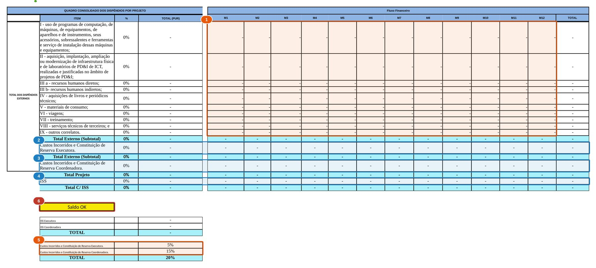
1G9:R18 · Valor mensal de cada rubrica conforme PUR (digitar).
2Custos incorridos da Executora (calculado).
3Custos incorridos da Coordenadora (calculado).
4ISS (calculado).
5E34 e E35 · Percentuais de custos incorridos: 5% e 15%.
6C28 · Checagem do fluxo, que compara com a célula vazia V23.
PFPlanilha Financeira · aba Profissionais Previstos
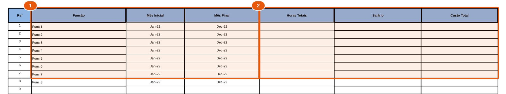
1Função, mês inicial e mês final de cada posição prevista.
2Horas totais, salário e custo total. Não há horas por mês.
Consolidado e conciliação: as duas contas que precisam dar zero
Verificação por rubrica
GRealizado na Posição
−
IPago no extrato (Conc. Bancária, por rubrica)
=
K160
Saldo do projeto contra saldo bancário
BAportes + rendimentos líquidos
−
CTotal das despesas
=
DSaldo do projeto
D28Saldo em conta e aplicação
−
D29Restituições não creditadas
−
D30Cheques não descontados
=
ESaldo disponível
DSaldo do projeto
−
ESaldo disponível
=
F · D320
Na Conc. Bancária, o número da NF é obrigatório também nas guias de impostos e contribuições (Orientações). A rubrica de cada linha vem de uma lista e precisa ser idêntica ao rótulo do Consolidado, porque a soma é feita por texto.
PFPlanilha Financeira · aba Consolidado
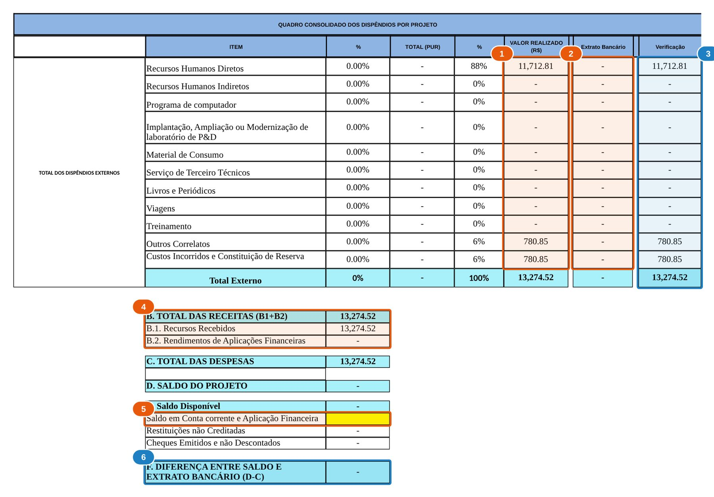
1Valor realizado por rubrica, vindo da Posição Financeira.
2Extrato bancário por rubrica, vindo da Conc. Bancária.
3Verificação = realizado − extrato. Precisa dar zero. No exemplo do modelo não dá, porque o extrato está vazio.
4Receitas: recursos recebidos e rendimentos.
5D28 · Saldo em conta corrente e aplicação (digitar).
6Diferença entre saldo e extrato. Precisa dar zero.
3Rubrica, escolhida na lista. A soma do Consolidado depende desse texto.
4Linha 36 · Fim da área de pagamentos (32 linhas). Inserir linhas acima dela.
5Valores pendentes ou a compensar.
6Cheques emitidos e não descontados e restituições não creditadas.
05 · Indicadores Gerenciais
Indicadores Gerenciais: o que os números contam sobre o projeto
Os indicadores comparam o que o PUR previu com o que o projeto fez, em dinheiro, em pessoas e em horas. Preencher os quadros é a parte mecânica. O valor do trabalho do analista está em ler os números, perguntar por que eles estão assim e sustentar a resposta com dados e documentos.
Esta seção explica o que cada índice mede, quais índices derivados ajudam a encontrar causas, como ler as curvas acumuladas e como transformar um desvio em uma resposta útil no tópico XVI do relatório.
Abas com indicadores
Equipamentos, Laboratório, RHD, RHI, Materiais, STT e Correlatos. As abas RHD e RHI têm três quadros (R$, profissionais e horas). As demais têm só o quadro de R$.
Rubricas sem indicador
Livros e periódicos, viagens, treinamento, custos incorridos e ISS não têm aba no IG nem quadro no tópico XVI do RD. O realizado delas aparece apenas nos quadros XIII e XIV.
Anatomia de um quadro (aba RHD)
Indicador
M1
M2
M3
M4
M5
M6
M7
M8
M9
M10
M11
M12
R$ PUR ¹
·
·
·
·
·
·
·
·
·
·
·
·
R$ Realizado ²
·
·
·
·
·
·
·
·
·
·
·
·
R$ PUR Acum. ³
ƒ
ƒ
ƒ
ƒ
ƒ
ƒ
ƒ
ƒ
ƒ
ƒ
ƒ
ƒ
R$ Realiz. Acum. ⁴
ƒ
ƒ
ƒ
ƒ
ƒ
ƒ
ƒ
ƒ
ƒ
ƒ
ƒ
ƒ
% R$ Acum. ⁵
ƒ
ƒ
ƒ
ƒ
ƒ
ƒ
ƒ
ƒ
ƒ
ƒ
ƒ
ƒ
Profissionais PUR ⁶
·
·
·
·
·
·
·
·
·
·
·
·
Profissionais Realiz. ⁷
·
·
·
·
·
·
·
·
·
·
·
·
Horas PUR ⁸
·
·
·
·
·
·
·
·
·
·
·
·
Horas Realizadas ⁹
·
·
·
·
·
·
·
·
·
·
·
·
Horas PUR Acum. ¹⁰
ƒ
ƒ
ƒ
ƒ
ƒ
ƒ
ƒ
ƒ
ƒ
ƒ
ƒ
ƒ
Horas Realiz. Acum. ¹¹
ƒ
ƒ
ƒ
ƒ
ƒ
ƒ
ƒ
ƒ
ƒ
ƒ
ƒ
ƒ
% Horas Acum. ¹²
ƒ
ƒ
ƒ
ƒ
ƒ
ƒ
ƒ
ƒ
ƒ
ƒ
ƒ
ƒ
Digitar células amarelas do modelo Fórmula acumulados e percentuais
IGIndicadores Gerenciais · aba RHD (meses 1 a 6)
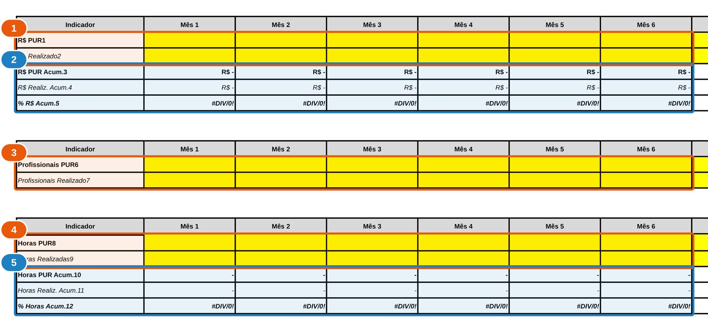
1R$ PUR e R$ Realizado. Células amarelas, digitar.
2Acumulados e % (fórmula). Mostra #DIV/0! enquanto não houver valores.
3Profissionais planejados e realizados (digitar).
4Horas planejadas e realizadas (digitar).
5Horas acumuladas e % (fórmula).
Nota
Indicador
Tipo
Regra do modelo
De onde tirar o número
1
R$ PUR
Digitar
Valor planejado no PUR ou último adendo para o mês
PF · Posição Financeira, linha PUR da rubrica, coluna do mês
2
R$ Realizado
Digitar
Valor realizado no mês
PF · Posição Financeira, linha Real. da rubrica
3
R$ PUR Acum.
Fórmula
Mês 1 = valor do mês; demais = mês + acumulado anterior
Calculado
4
R$ Realiz. Acum.
Fórmula
Mesma regra sobre o realizado
Calculado
5
% R$ Acum.
Fórmula
Realizado acumulado ÷ PUR acumulado
Calculado; dá #DIV/0! enquanto o PUR acumulado for zero
6
Profissionais PUR
Digitar
Quantidade planejada para o mês
PF · Profissionais Previstos (funções ativas entre mês inicial e final)
7
Profissionais Realiz.
Digitar
Quantidade alocada no mês
PF · Abertura de Pagamentos: profissionais com lançamento no mês
8
Horas PUR
Digitar
Horas planejadas para o mês
PUR; a PF só guarda horas totais por função
9
Horas Realizadas
Digitar
Horas realizadas no mês
PF · Abertura de Pagamentos, soma da coluna K no mês
10
Horas PUR Acum.
Fórmula
Acumulado das horas planejadas
Calculado
11
Horas Realiz. Acum.
Fórmula
Acumulado das horas realizadas
Calculado
12
% Horas Acum.
Fórmula
Horas realizadas acum. ÷ planejadas acum.
Calculado
Os índices, um a um
Cada índice responde a uma pergunta diferente sobre o projeto. Nenhum deles, isolado, diz se o projeto vai bem. A análise começa quando dois ou mais são lidos juntos e confrontados com o cronograma e com os documentos.
1 · 2
R$ planejado e realizado no mês
Mede
O ritmo de gasto de cada rubrica em cada competência.
Ajuda a ver
Picos de compra, meses sem lançamento, efeito de reajustes e de pagamentos em atraso.
Sozinho não diz
Se o mês fora do plano é ruído pontual ou o começo de uma tendência.
Este mês fora do plano foi uma decisão do projeto ou algo que aconteceu com ele?
3 · 4 · 5
R$ acumulado e % de execução
Mede
Quanto do orçamento planejado até agora já foi de fato executado.
Ajuda a ver
Subexecução (abaixo de 100%), antecipação ou gasto maior que o previsto (acima de 100%) e a direção do desvio ao longo dos meses.
Sozinho não diz
Se o dinheiro gasto virou entrega. Um projeto pode estar em 100% financeiro e atrasado tecnicamente.
A distância entre planejado e realizado está aumentando, estável ou diminuindo?
6 · 7
Profissionais planejados e alocados
Mede
O tamanho da equipe em cada mês, em comparação ao PUR.
Ajuda a ver
Vagas não preenchidas, contratações antecipadas, saídas e substituições.
Sozinho não diz
Quanto cada pessoa se dedicou. A mesma quantidade de pessoas pode entregar muito mais ou muito menos horas.
A equipe que está no projeto é a que o PUR previu, em quantidade e em perfil?
8 · 9
Horas planejadas e realizadas no mês
Mede
O esforço efetivamente aplicado em P&D na competência.
Ajuda a ver
Férias, afastamentos, dedicação parcial maior que a prevista e meses de esforço concentrado.
Sozinho não diz
Se as horas lançadas correspondem ao trabalho descrito no tópico XII.
As horas deste mês contam a mesma história que as atividades descritas no relatório?
10 · 11 · 12
Horas acumuladas e % de horas
Mede
Quanto do esforço total previsto já foi realizado.
Ajuda a ver
Se a execução do RH acompanha a execução financeira do RH. É o melhor contraponto ao % de R$ das abas RHD e RHI.
Sozinho não diz
O custo dessas horas. Para isso é preciso cruzar com o R$.
O % de horas e o % de R$ do RH andam juntos? Se não, o que explica a diferença?
PF · J4
Status técnico × financeiro
Mede
A relação entre o % técnico informado e o % financeiro apurado na Posição Financeira.
Ajuda a ver
Gasto que não virou entrega. O modelo marca "atrasado" quando o técnico fica mais de 25% abaixo do financeiro.
Sozinho não diz
Como o % técnico foi estimado. Ele depende do cronograma (X) e das metas (XI).
O % técnico informado se sustenta diante dos entregáveis realizados?
Índices derivados que valem a conta
Proposta do manual Não estão nos modelos, mas saem dos mesmos dados com uma divisão. São eles que costumam explicar o porquê de um desvio.
Separa efeito preço de efeito volume. Se o custo da hora subiu, o desvio vem do preço: salário, encargos, provisões ou perfil da equipe.
Horas por profissional
horas realizadas ÷ profissionais alocados
IG RHD/RHI
Grau de dedicação. Queda indica alocação parcial ou ausências; alta indica sobrecarga de uma equipe menor.
Distância R$ × horas
% R$ acumulado − % horas acumuladas
IG RHD/RHI
Positiva: o projeto paga mais por hora do que previu. Negativa: entrega horas a um custo menor, o que também merece explicação.
Desvio do mês
R$ realizado no mês ÷ R$ PUR do mês
IG linhas 2 e 3
Mostra a oscilação que o acumulado suaviza. Meses muito acima seguidos de meses muito abaixo podem indicar lançamento fora da competência.
Peso da rubrica
realizado da rubrica ÷ realizado total comparar com o peso no PUR
RD XIII e XIV
Mudança na composição do projeto. Por exemplo, mais serviços de terceiros e menos RH direto ao longo do tempo.
Fôlego de caixa
saldo final ÷ gasto médio mensal
PF linhas 74 e 51
Quantos meses o saldo cobre sem novo aporte. Importa porque cada aporte depende da prestação de contas da competência.
Quatro formas que a curva acumulada costuma tomar
Exemplos ilustrativos, com números fictícios, para treinar a leitura. A linha tracejada é o PUR acumulado; a linha cheia é o realizado acumulado até a competência atual (mês 7). Passe o cursor sobre o gráfico para ver os valores de cada mês.
PUR acumulado (% do orçamento da rubrica)Realizado acumulado
Em linha com o plano
Leitura. O realizado acompanha o PUR mês a mês, com desvios pequenos que se compensam.
Pergunta. O técnico acompanha (J4)? Estar em linha no total pode esconder rubricas desalinhadas.
Em linha com o plano
Mês
1
2
3
4
5
6
7
8
9
10
11
12
PUR acum. %
5
12
20
28
36
45
54
63
72
81
90
100
Realizado acum. %
4
11
21
27
37
44
55
Atraso que cresce
Leitura. A distância aumenta todo mês. No mês 7 o projeto executou metade do previsto.
Pergunta. É contratação atrasada, compra adiada ou plano irrealista? Ainda há prazo para um adendo?
Atraso que cresce
Mês
1
2
3
4
5
6
7
8
9
10
11
12
PUR acum. %
5
12
20
28
36
45
54
63
72
81
90
100
Realizado acum. %
3
7
11
15
19
23
27
Atraso em recuperação
Leitura. Começou atrás e acelerou a partir do mês 4, quase alcançando o plano.
Pergunta. A aceleração vem de entrega real ou de compras concentradas? A equipe absorve esse ritmo?
Atraso em recuperação
Mês
1
2
3
4
5
6
7
8
9
10
11
12
PUR acum. %
5
12
20
28
36
45
54
63
72
81
90
100
Realizado acum. %
2
5
9
16
27
40
53
À frente do plano
Leitura. O gasto está acima do previsto desde o início. No ritmo atual, o orçamento acaba antes do fim.
Pergunta. É etapa antecipada ou custo maior que o previsto? Haverá recurso até o último mês?
À frente do plano
Mês
1
2
3
4
5
6
7
8
9
10
11
12
PUR acum. %
5
12
20
28
36
45
54
63
72
81
90
100
Realizado acum. %
10
22
34
45
55
64
72
Leitura cruzada: do sinal à hipótese
Um sinal nos indicadores abre perguntas. As hipóteses abaixo são pontos de partida. A conclusão só vale depois de conferida no documento indicado.
Sinal observado
Hipóteses a testar
Onde confirmar
Onde registrar
% R$ do RH sobe mais rápido que % horas
Reajuste salarial, encargos ou provisões acima do previsto; profissional mais sênior que o planejado; horas lançadas abaixo das trabalhadas
Abertura de Pagamentos: AZ ÷ K por pessoa; folha e ponto
XVI; XVII se houver risco de estouro
Horas no plano com menos profissionais
Vaga em aberto compensada com sobrecarga; dedicação acima da prevista
Profissionais Previstos × Abertura; contratos de trabalho
XVI; XVII; XIX se a equipe mudar
Profissionais no plano e horas abaixo
Férias, afastamentos, dedicação parcial maior que a prevista, horas não lançadas
Folhas de ponto, recibos de férias, Abertura coluna K
XVI
Financeiro avança e o técnico fica para trás (J4 atrasado)
Gasto sem entrega correspondente; cronograma desatualizado; % técnico subestimado
Cronograma (X), entregáveis (XI), relatórios de atividade
XVI; XVII; risco de pertinência
Equipamentos ou materiais em 0% até perto do fim
Compra concentrada no final; cotações paradas; item deixou de ser necessário
Status das cotações com Compras; PUR
XVII; ofício de mudança com 60 dias de antecedência, se for o caso
Serviços de terceiros acima do plano e RH direto abaixo
Parte do P&D foi transferida para terceiros
Contratos e relatórios de STT
XIX e ofício; avaliar enquadramento e retenção de conhecimento
Outros correlatos acima do plano
Rateio maior que o previsto; despesa de outra natureza classificada como correlato
Aba X: critério de rateio e justificativa
XVI; revisar elegibilidade
Acumulado em 100% com meses alternando muito acima e muito abaixo
Desvios se compensando; despesas lançadas fora da competência
Coluna B (data) das abas de rubrica; Conc. Bancária
XVI
Do número à decisão
Observar
Qual indicador saiu do plano? Quanto no mês e quanto no acumulado? Há quantos meses?
Localizar
Em qual rubrica, em quais meses, em quais pessoas ou fornecedores o desvio se concentra?
Explicar
Qual a causa, e qual documento a comprova? Uma explicação sem evidência continua sendo hipótese.
Projetar
Se nada mudar, onde a rubrica termina? Use a Tendência e a coluna G (Diferença) da Posição Financeira.
Agir e registrar
O que será feito, como, por quem e até quando. Registrar no tópico XVI e, se for mudança de plano, preparar o ofício a tempo.
Cuidados de interpretação
Nos primeiros meses a base é pequena: R$ 1 mil de diferença sobre um PUR acumulado de R$ 2 mil já aparece como 50%.
Depois de um adendo, um PUR desatualizado distorce todos os percentuais.
Estar em 100% não prova que o projeto vai bem. Execução financeira no plano com entrega atrasada continua sendo um problema.
O acumulado suaviza. Olhe também o mês.
O IG não tem vínculo com a planilha. Antes de concluir, confira se o número foi transcrito corretamente.
Dois índices que se movem juntos não provam causa. A causa vem do documento.
E a tolerância?
Os modelos não definem faixa de tolerância para o IG. A única régua numérica está na Posição Financeira: o técnico é considerado em dia enquanto não ficar mais de 25% abaixo do financeiro.
Sugestão Combinar com a coordenação faixas de atenção por rubrica, revisadas a cada adendo. O valor da faixa importa menos do que a disciplina de explicar todo desvio que a ultrapassa.
Respondendo às três perguntas do tópico XVI
Exemplo ilustrativo, com números fictícios. A resposta fundamentada cita o indicador, o tamanho do desvio, a causa comprovada e a consequência. É isso que permite ao CITS avaliar o projeto sem precisar pedir esclarecimentos.
Resposta vaga
Resposta fundamentada
Algum indicador possui tendência para desvio nos meses futuros?
Não.
Sim, em Materiais de Consumo. O PUR acumulado chega a 60% no mês 9 e ainda não há compras lançadas até o mês 7. Se as cotações em andamento não forem concluídas no mês 8, a execução da rubrica ficará concentrada nos três últimos meses.
Há algum indicador com desvio neste momento?
Pequeno desvio em RH.
Sim, em RH Direto: 108% do R$ acumulado contra 94% das horas acumuladas no mês 7. O custo da hora realizado está 15% acima do planejado por causa do reajuste aplicado a dois pesquisadores a partir do mês 5, conforme folha de pagamento.
Quais ações serão feitas para corrigir ou evitar os desvios?
Vamos acompanhar.
O quê: recalcular a Tendência de RH Direto com o custo da hora atual. Quem: analista de P&D com o coordenador. Quando: até o fechamento do mês 8. Se a projeção indicar estouro da rubrica, preparar ofício de remanejamento respeitando os 60 dias antes do fim do cronograma.
06 · Relatório Técnico (Relatório Demonstrativo)
As 21 seções e quem fornece cada uma
muda todo mês fixa, conforme PUR quando houver preenchida pelo CITS
I
Dados Gerais
Período do reporte e valor realizado mudam todo mês
AnalistaPF
II
Descrição
Conforme PUR ou último adendo; tabela de temas do PPI4.0
Coordenador
III
Objetivo Geral
Conforme PUR
Coordenador
IV
Objetivos Específicos
Conforme PUR
Coordenador
V
Intensidade do Desafio
Incerteza científica ou tecnológica do projeto
Coordenador
VI
Equacionamento da Solução
Características inovadoras incorporadas no período
Coordenador
VII
Desenvolvimento Regional
Resultados do período para o desenvolvimento regional
Coordenador
VIII
Escopo
Escopo e requisitos do PUR
Coordenador
IX
Resultados
Maturidade I4.0 inicial e desejada, 15 indicadores de inovação, texto
Coordenador
X
Cronograma
Gantt realizado × planejado e valor agregado (EVM)
CoordenadorAnalista
XI
Metas
Entregáveis: indicador, meta, data planejada e realizada
Coordenador
XII
Atividades do Período
Um quadro por atividade, cumulativo
CoordenadorPF
XIII
Quadro Resumo
Dispêndios do período por rubrica
PF
XIV
Comparativo
Planejado no PUR × realizado
PF
XV
Detalhamento do RH
Pessoas, horas e R$/h
PF
XVI
Indicadores Gerenciais
Quadros do IG e três respostas
IGAnalista
XVII
Riscos
Risco, ocorrência, impacto, ação, responsável, data
Conforme Res. 9 CAPDA: sistemas ciber-físicos, manufatura inteligente, automação, impressão 3D, robótica, IA, cibersegurança, entre outros
Fixo
Prints do relatório: seções I a XI
Nos prints do relatório:1preenchido pelo time técnico (coordenador e pesquisadores)1preenchido pelo analista de P&D, com dados da planilha ou do PUR1orientação do modelo, apagar antes do envio1preenchido pelo CITS
RDRelatório Demonstrativo · I – Dados Gerais (página 1)
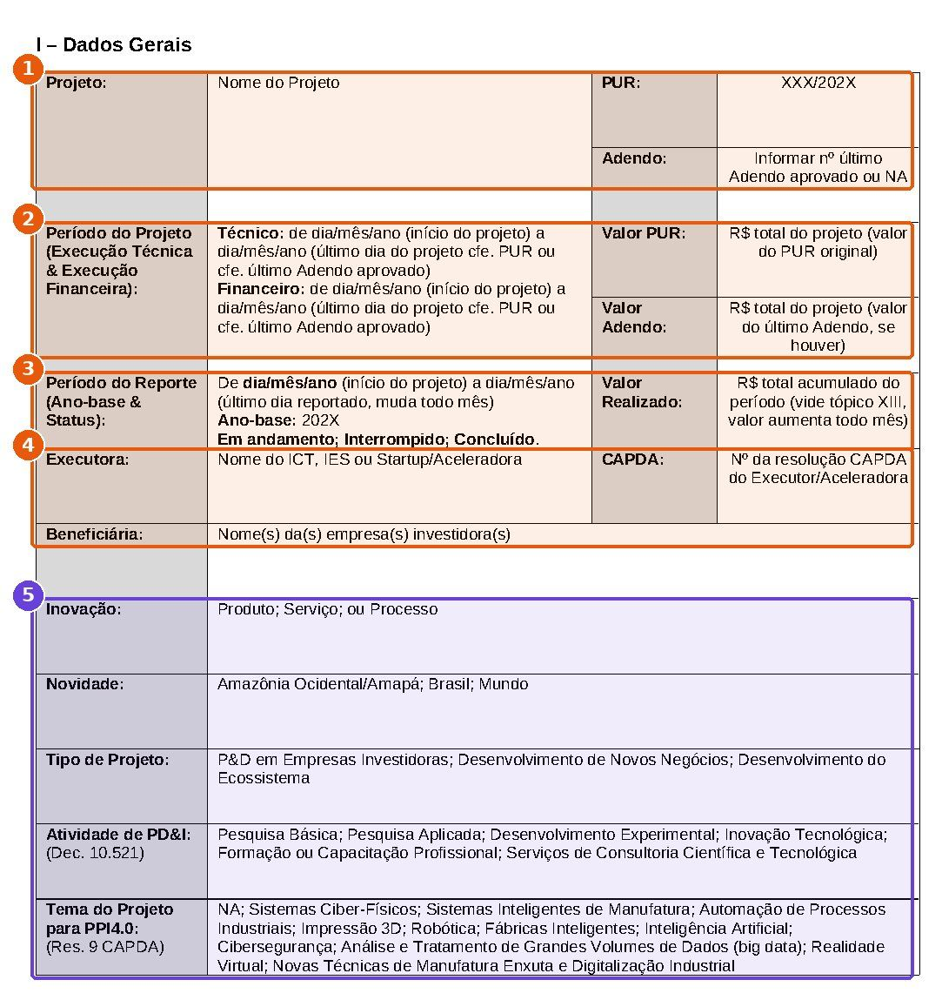
1analistaProjeto, PUR e último adendo. Analista, conforme PUR.
2analistaPeríodo do projeto e valores do PUR e do adendo. Analista.
3analistaPeríodo do reporte e valor realizado. Analista, todo mês, com o total da Planilha Financeira.
4analistaExecutora, resolução CAPDA e beneficiária. Analista.
5time técnicoClassificações do projeto: inovação, novidade, tipo, atividade de PD&I e tema PPI4.0. Definidas pelo time técnico conforme PUR.
RDRelatório Demonstrativo · II a VIII (página 2)
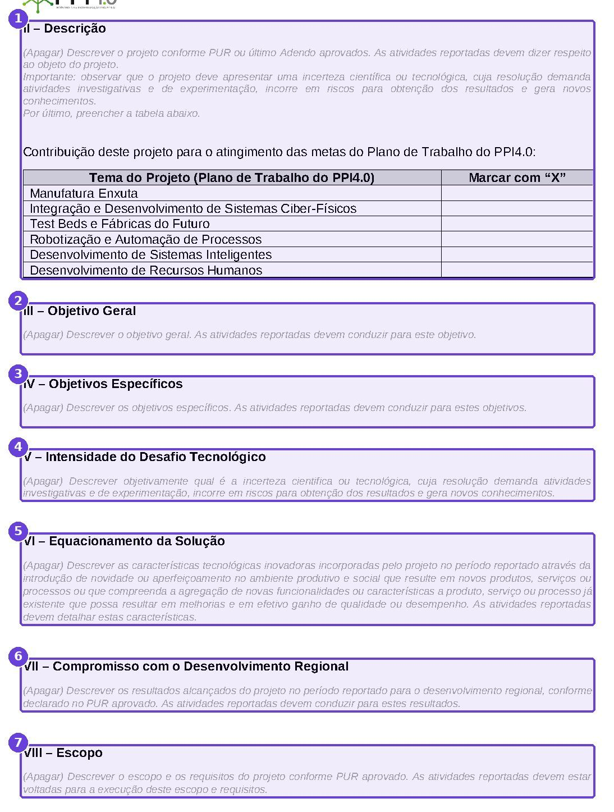
1time técnicoII Descrição do projeto e tabela de contribuição para o Plano de Trabalho do PPI4.0.
2time técnicoIII Objetivo geral.
3time técnicoIV Objetivos específicos.
4time técnicoV Intensidade do desafio tecnológico.
5time técnicoVI Equacionamento da solução: características inovadoras do período.
6time técnicoVII Compromisso com o desenvolvimento regional.
7time técnicoVIII Escopo e requisitos.
RDRelatório Demonstrativo · IX a XI (página 3)
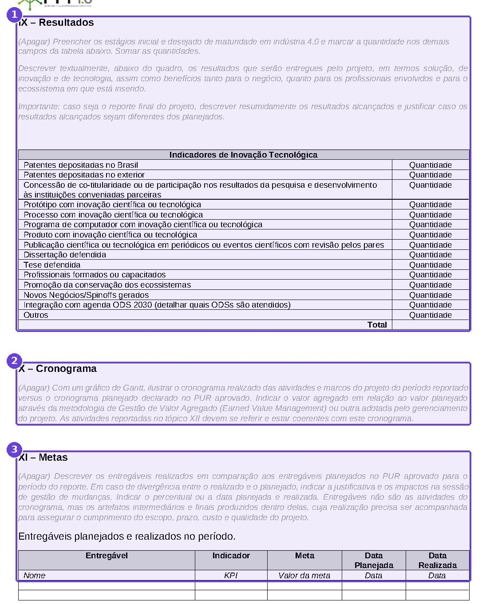
1time técnicoIX Resultados: maturidade I4.0, indicadores de inovação tecnológica e texto de resultados.
2time técnicoX Cronograma: Gantt realizado × planejado e valor agregado. O analista apoia com os valores.
3time técnicoXI Metas: entregáveis com indicador, meta e datas planejada e realizada.
XII · Anatomia do quadro de cada atividade
1 Nome da atividade conforme cronograma
PeríodoDo início real da atividade ao último dia do mês reportado (muda todo mês)
JustificativaPor que a atividade precisou ser executada e como se liga ao aumento de maturidade em Indústria 4.0
ResultadosResultados alcançados, conclusões, entregáveis e resultados da investigação
Serviços técnicos de terceirosServiços contratados, entregáveis e contribuição para a atividade, mês a mês
Aplicação dos dispêndiosAquisições, treinamentos e laboratório: o que foi feito e como contribuiu
ParticipantesNome, cargo/função e o que fez no período (time técnico). Horas acumuladas mês a mês, Mês 1 = …, Mês 2 = … (analista, com as horas da Abertura de Pagamentos)
Dispêndios na atividade13 rubricas com % (rubrica ÷ total da atividade) e R$ acumulado desde o início
A cada mês um bloco novo é acrescentado e os anteriores são mantidos, inclusive o reporte do mês anterior. As orientações em itálico do modelo devem ser apagadas antes do envio.
RDRelatório Demonstrativo · XII – quadro da atividade (página 4)
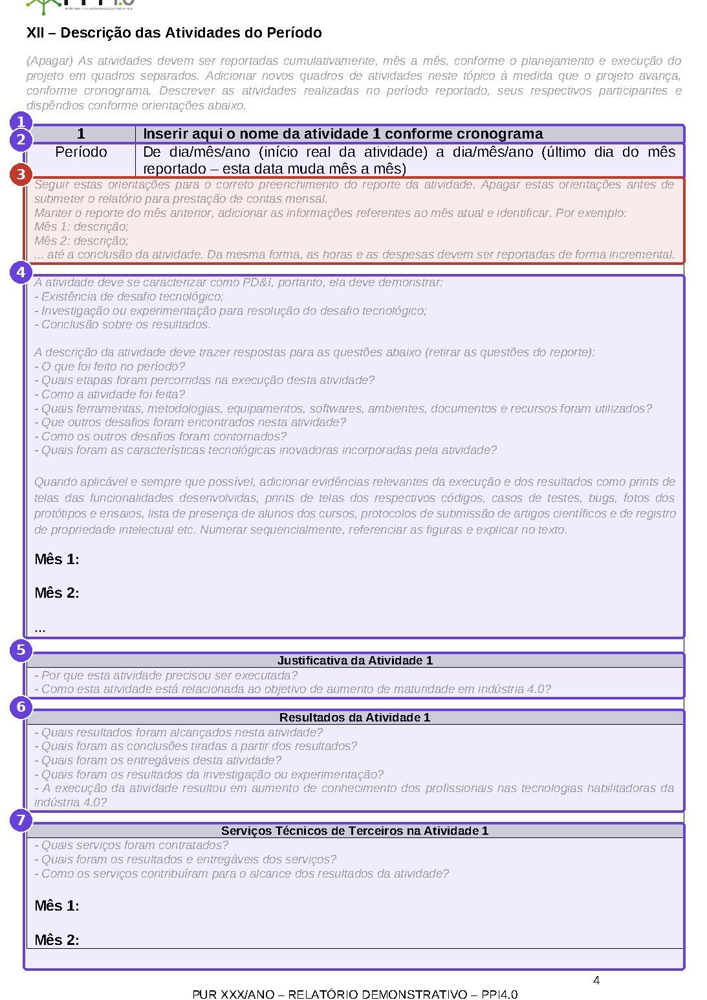
1time técnicoNome da atividade conforme cronograma.
2time técnicoPeríodo: do início real ao último dia do mês reportado.
3Orientação do modelo sobre preenchimento incremental. Apagar antes do envio.
4time técnicoDescrição da atividade mês a mês, com evidências (prints, fotos, testes, protocolos).
5time técnicoJustificativa da atividade.
6time técnicoResultados da atividade.
7time técnicoServiços técnicos de terceiros, mês a mês.
RDRelatório Demonstrativo · XII – continuação (página 5)
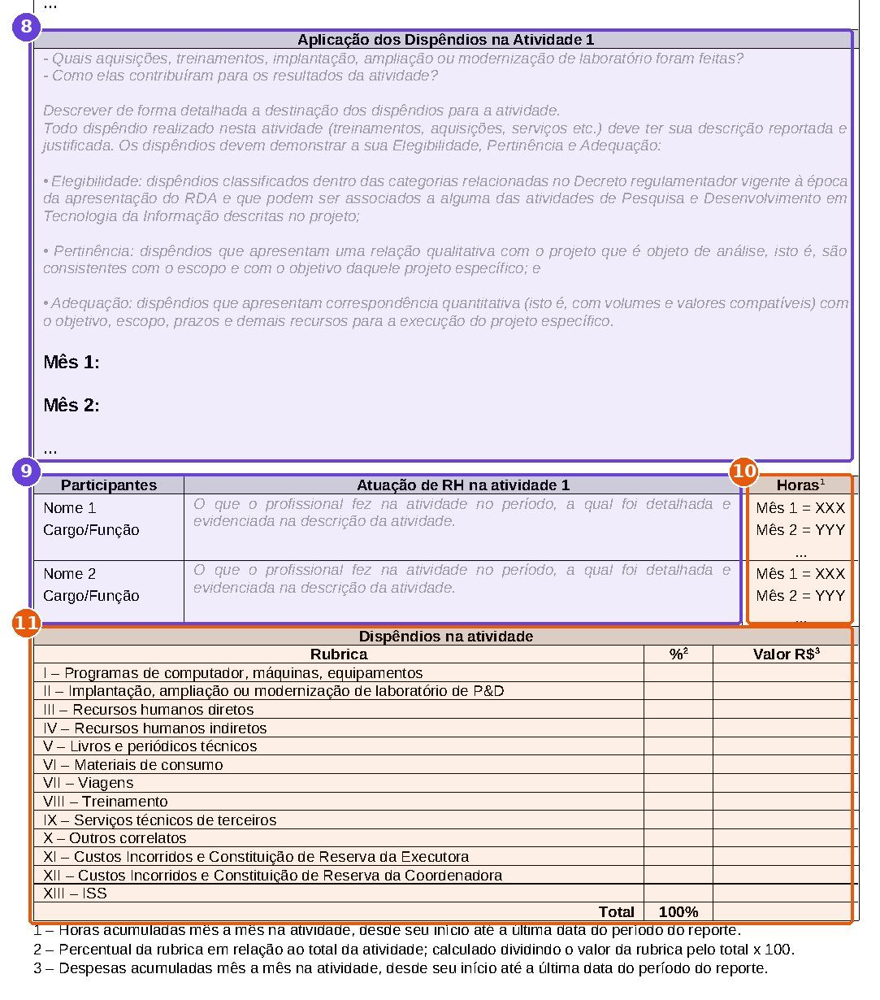
8time técnicoAplicação dos dispêndios: como cada aquisição contribuiu para a atividade.
9time técnicoParticipantes: nome, cargo e o que cada profissional fez na atividade no período.
10analistaHoras de cada profissional, acumuladas mês a mês. Analista, com as horas da Abertura de Pagamentos (coluna K).
11analistaDispêndios na atividade: 13 rubricas, % e R$ acumulado. Analista, com dados da Planilha Financeira.
Quadros de consolidação
Quadro
Regra do modelo
Fonte prática
XIII · Quadro Resumo
Valor de cada rubrica = soma dos quadros de atividade do tópico XII; % = rubrica ÷ total × 100
PF coluna E (Total Realizado) da Posição Financeira, que deve coincidir
XIV · Comparativo
Planejado (PUR ou último adendo) × Realizado (do XIII); % = realizado ÷ planejado × 100
PF coluna C (Baseline) e coluna E
XV · Detalhamento do RH
Nº, nome, CPF, título, RHD ou RHI, atividades, horas (soma do XII), R$/h
PF Aberturas III.I e IV.I (nome, CPF, função, horas K, total AZ)
XVI · Indicadores
Mesmos 7 quadros do IG, mensal e acumulado, mais as três respostas
IG copiar os quadros
XX · Revisões
Revisão, data, responsável e comentário a cada submissão
Mesmo número Rev-xx do nome do arquivo
RDRelatório Demonstrativo · XIV – Comparativo (página 6)
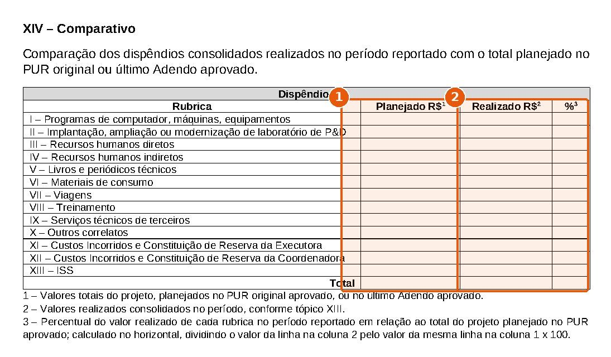
1analistaPlanejado R$: PUR original ou último adendo. Analista.
2analistaRealizado R$: vem do quadro XIII. Analista.
RDRelatório Demonstrativo · XV – Detalhamento do RH (página 7)
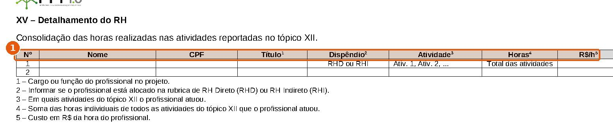
1analistaNome, CPF, título, RHD ou RHI, atividades, horas e R$/h. Analista, com a Abertura de Pagamentos.
RDRelatório Demonstrativo · XVI – Indicadores Gerenciais (página 8)
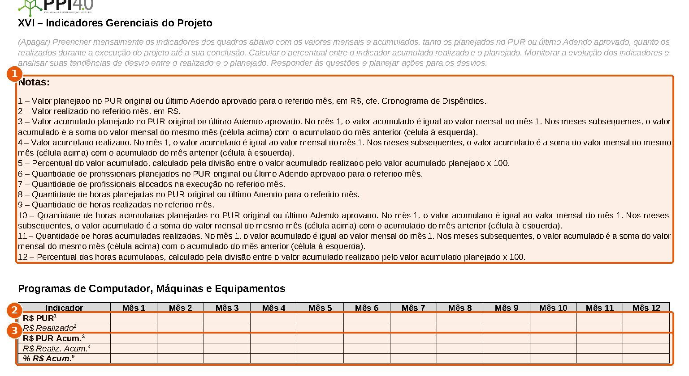
1analistaNotas 1 a 12: as mesmas regras da planilha de indicadores.
2analistaLinhas planejada e realizada do mês. Analista, copiadas do IG.
3analistaAcumulados e percentual. Analista.
RDRelatório Demonstrativo · respostas do XVI e XVII a XIX (página 11)
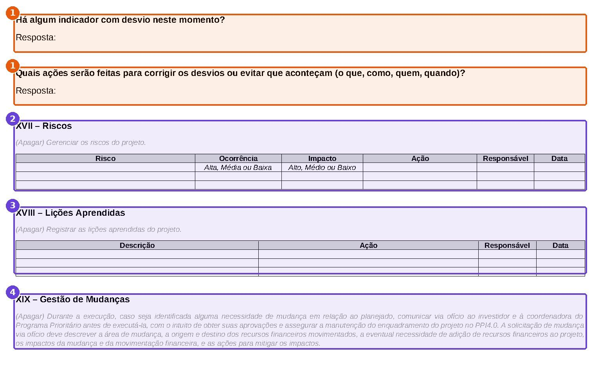
1analistaRespostas às perguntas de desvio. Analista, a partir dos indicadores, validadas com o coordenador.
2time técnicoXVII Riscos: ocorrência, impacto, ação, responsável e data.
3time técnicoXVIII Lições aprendidas.
4time técnicoXIX Gestão de mudanças: orientação sobre o ofício prévio.
RDRelatório Demonstrativo · XIX – quadro de mudanças (página 12)
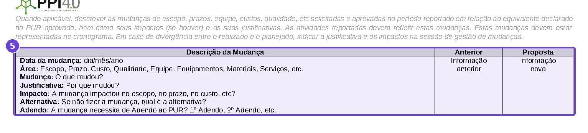
5time técnicoData, área, mudança, justificativa, impacto, alternativa e adendo, com a informação anterior e a proposta.
RDRelatório Demonstrativo · XX e XXI (página 13)
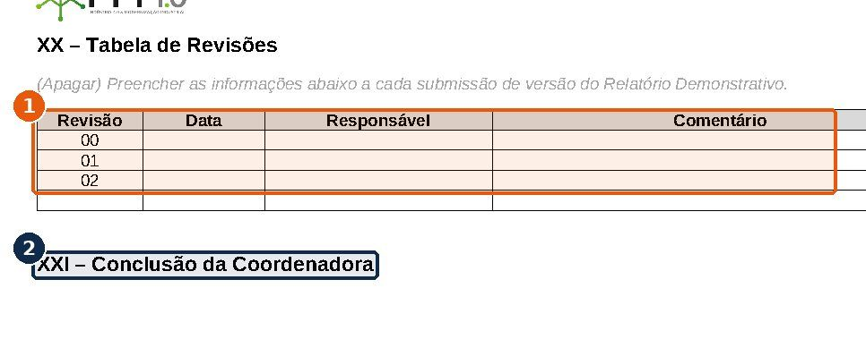
1analistaTabela de revisões: uma linha por submissão. Analista.
2CITSConclusão da Coordenadora, preenchida pelo CITS.
07 · Matriz de rastreabilidade
Cada campo do relatório e sua origem
Campo no RD
Origem
Célula ou coluna
Conferência
I · Valor PUR
PF
Posição Financeira L3 (valor total do projeto)
Igual ao termo aditivo / PUR
I · Valor Realizado
RD
Total do quadro XIII
Igual ao total realizado da PF (coluna E, linha 61)
XIII · rubricas I a X
PF
Posição Financeira, coluna E, linhas 9 a 45
Mesma soma dos quadros do XII
XIII · XI Custos incorridos Executora
PF
Posição Financeira E53
Só existe se C3 = SIM
XIII · XII Custos incorridos Coordenadora
PF
Valores previstos Iniciais, linha 22 (planejado)
Sem linha de realizado na Posição
XIII · XIII ISS
PF
Posição Financeira E57
Calculado a 5% (C79)
XIV · Planejado
PF
Posição Financeira, coluna C (Baseline PUR)
Atualizar após adendo em Valores previstos
XIV · Realizado e %
RD
Quadro XIII
% = realizado ÷ planejado
XV · Nome, CPF, título
PF
Abertura III.I / IV.I, colunas C, D, H
Mesmas pessoas do tópico XII
XV · RHD ou RHI
PF
Aba de origem (III.I = RHD, IV.I = RHI)
—
XV · Horas
PF
Soma da coluna K por pessoa
Igual à soma das horas nos quadros do XII
XV · R$/h
PF
Coluna AZ ÷ coluna K (premissa de cálculo)
Custo da hora coerente com a folha
XII · Participantes e atuação
PF
Coluna BA (Abertura) ou S (RH_Custo) · Atividades Realizadas
Atividade igual à do cronograma
XII · Horas de cada participante
PF
Abertura III.I / IV.I, coluna K (horas no projeto), preenchida pelo analista
Soma das horas do XII = horas do XV = Aberturas
XII · Dispêndios não-RH por atividade
PF
Sem campo de atividade nas abas; usar Justificativa ou Comentários
Ver lacunas
XVI · Quadros
IG
As 7 abas, linhas 2 a 19
R$ do IG = Posição Financeira
PF I4 · % técnico
RD
Cronograma (X) e metas (XI)
Gera o status técnico J4 da PF
08 · Alertas dos modelos
Pontos dos arquivos que podem gerar erro silencioso
Encontrados na leitura das fórmulas e validações dos modelos anexados. A coluna "Correção" é sugestão deste manual.
#
Onde
O que acontece
Correção sugerida
Nível
01
Posição Financeira · linha 6
O modelo vem com "realizado" e "planejado". As fórmulas procuram "Realizado" e "Projetado". Com "planejado", o Total Previsto (coluna D) fica zerado. Não há lista suspensa.
Digitar exatamente "Projetado" nos meses futuros, ou criar lista com Realizado/Projetado.
Alta
02
Orientações × Posição Financeira
A aba Orientações cita C5 para o nome (está em C6) e C68 para o % de custos incorridos (está em C77). Também manda digitar a linha PUR, que já é fórmula ligada a Valores previstos Iniciais.
Seguir as células indicadas neste manual; alterar o PUR em Valores previstos.
Média
03
III - RH Direto_Custo / IV
As Orientações mandam preencher as colunas I, J e P. A coluna I é fórmula. J (demais custos) e P (descontos de benefícios) entram só no total dessa aba, que não alimenta a Posição.
Lançar todo custo de RH na Abertura (III.I / IV.I).
Alta
04
Fórmulas #REF!
297 fórmulas quebradas: 279 em III - RH Direto_Custo (24 linhas sem vínculo de nome, como 9, 17, 19, 27), 9 na Posição Financeira (ex.: S62, Tendência do total) e 9 em IV.I RHI (ex.: AZ55).
Recriar os vínculos antes do primeiro uso e testar com uma linha de exemplo.
Alta
05
I - Programa de Computador e II - Modernização LAB
A coluna de valor que a Posição soma (L e K) não tem fórmula. Se ficar vazia, o gasto não aparece.
Digitar valor × rateio ou incluir a fórmula.
Alta
06
Conc. Bancária
O Consolidado soma as linhas 3 a 53. A área de pagamentos tem 32 linhas (4 a 35). Linhas acrescentadas abaixo da área de pendências ficam fora da soma.
Inserir linhas dentro do intervalo, acima da linha 36.
Alta
07
Conc. Bancária · rubrica
A soma por rubrica compara texto. Qualquer diferença de grafia deixa a linha fora do Consolidado.
Escolher sempre da lista suspensa.
Média
08
Valores previstos × Posição
A Posição tem 15 meses (M a AA). Valores previstos e IG têm 12. Meses 13 a 15 ficam com PUR zero.
Para projetos com mais de 12 meses, estender Valores previstos e o IG.
Média
09
Aba Impostos
Não alimenta nenhum total. A linha Impostos da Posição é calculada a 5% (C79) sobre o total.
Usar a aba como registro e conferir o valor calculado com as guias pagas.
Média
10
Custos incorridos da Coordenadora
Aparecem em Valores previstos (15%), mas a Posição só calcula a reserva da Executora (C77).
Confirmar com o CITS como reportar o item XII do RD.
Média
11
Valores previstos · C28
A checagem compara o total com a célula V23, que está vazia. O aviso "Fluxo com diferença" aparece mesmo com o fluxo correto.
Ignorar o aviso ou corrigir a referência.
Baixa
12
Validação de C78
A regra "margem de lucro entre 0 e 20" está em C78, uma célula vazia. O percentual real fica em C77, sem validação.
Mover a validação para C77.
Baixa
13
Macros VBA
As duas macros do arquivo só tentam desproteger abas por força bruta. Nenhuma automatiza o preenchimento. As abas IV - RH Indireto_Custo e Gastos Não Elegíveis estão protegidas.
Salvar como .xlsx se o CITS aceitar, ou manter sem executar as macros.
Baixa
14
IG · percentuais
% acumulado = realizado ÷ planejado sem tratamento de zero: #DIV/0! nos meses sem PUR.
Usar SEERRO ou deixar a célula em branco nesses meses.
Baixa
09 · Erros comuns de preenchimento
Sintoma, causa e prevenção
Sintoma
Causa provável
Prevenção
Gasto aparece no mês errado da Posição
Data da coluna B fora da competência
Usar a data de referência da competência, conferir a coluna A
Verificação do Consolidado diferente de zero
Pagamento lançado na aba e não na Conc. Bancária, rubrica escolhida errada ou linha fora do intervalo
Conciliar pagamento a pagamento; usar a lista de rubricas
Diferença entre saldo e extrato (D32) diferente de zero
Saldo D28 desatualizado, rendimento não lançado ou aporte ausente
Lançar rendimentos e IRRF nas linhas 70–71 e conferir aportes na linha 67
Total Realizado não inclui o mês
Mês não marcado como "Realizado" na linha 6
Marcar o mês ao fechar a competência
Total Previsto zerado
Meses futuros com "planejado" ou vazios
Usar "Projetado"
Projeção igual ao PUR, sem sinal de desvio
Tendência não replanejada
Atualizar a Tendência dos meses seguintes a cada fechamento
Apropriação integral de despesa compartilhada
Rateio deixado em 1 (100%)
Definir o rateio antes do lançamento
RD XIII diferente da PF
Valor alterado na PF depois de o RD ser montado
Fechar a PF antes do RD e repetir a conferência após qualquer ajuste
Relatório perdeu o histórico
Quadro do mês anterior apagado no tópico XII
Duplicar o arquivo da competência anterior e só acrescentar
% do IG distorcido após adendo
R$ PUR digitado do PUR original
Usar o último adendo aprovado nas linhas planejadas
Orientações do modelo enviadas ao CITS
Textos "(Apagar)" não removidos do RD
Revisão final antes de salvar a versão Rev-xx
10 · Checklist de fechamento mensal
Marque antes de enviar a competência
0 de 0
As marcações ficam salvas só neste navegador.
11 · Lacunas e premissas
O que os modelos não definem
Lacunas
Os modelos não definem tolerância de desvio para os indicadores do IG.
Não há campo de atividade nas abas de despesa não-RH, o que impede montar o tópico XII direto da planilha.
A planilha não registra horas planejadas por mês, só horas totais por função.
Não há linha de realizado para custos incorridos da Coordenadora na Posição Financeira.
Não há instrução sobre como tratar projetos com mais de 12 meses nos Valores previstos e no IG.
Não está definido se a versão .xlsm com macros é obrigatória.
Premissas adotadas
A Planilha Financeira é a fonte única dos valores em R$ do IG e do RD.
R$/h no quadro XV calculado como Valor Total Folha ÷ horas no projeto.
Profissionais realizados contados pelas pessoas com lançamento na Abertura do mês.
Percentuais de custos incorridos e ISS conforme o modelo, sujeitos ao PUR de cada projeto.
Correções da seção 08 são sugestões e não alteram os modelos oficiais sem anuência do CITS.